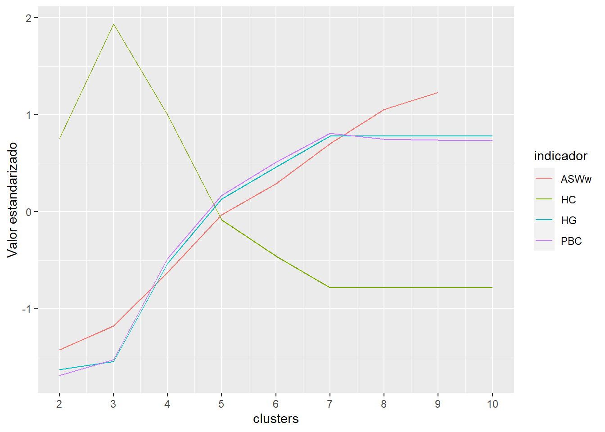
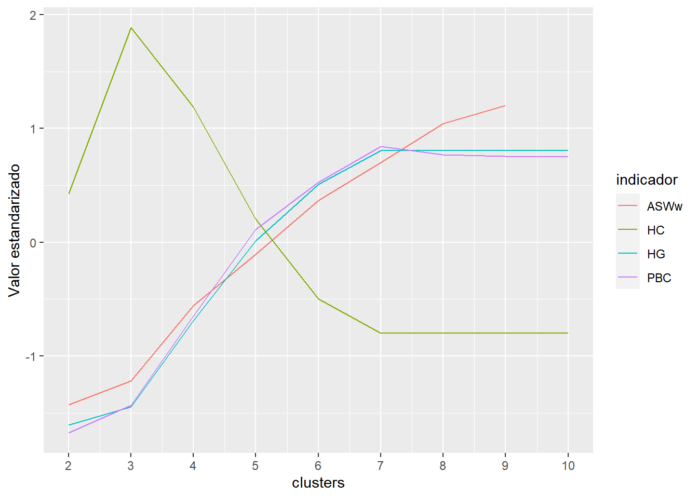

Capítulo 2 Trayectorias de sintomatologia depresiva. Modelo Latent Class Mixed Model (LCMM)
set.seed(123)2.1 Identificar trayectorias:
Modelos de trayectorias lineales:
Se usa el modelo de 1 clase para fijar los valores iniciales a iterar:
lcmm1_lin <- hlme(phq9 ~ ola, subject = "idencuesta", ng = 1,
data = elsoc_salud_long)
lcmm2_lin <- gridsearch(rep = 10, maxiter = 10, minit = lcmm1_lin,
hlme(phq9 ~ ola, mixture = ~ ola, subject = "idencuesta", ng = 2,
data = elsoc_salud_long))
lcmm3_lin <- gridsearch(rep = 10, maxiter = 10, minit = lcmm1_lin,
hlme(phq9 ~ ola, mixture = ~ ola, subject = "idencuesta", ng = 3,
data = elsoc_salud_long))
lcmm4_lin <- gridsearch(rep = 10, maxiter = 10, minit = lcmm1_lin,
hlme(phq9 ~ ola, mixture = ~ ola, subject = "idencuesta", ng = 4,
data = elsoc_salud_long))
lcmm5_lin <- gridsearch(rep = 10, maxiter = 10, minit = lcmm1_lin,
hlme(phq9 ~ ola, mixture = ~ ola, subject = "idencuesta", ng = 5,
data = elsoc_salud_long))
lcmm6_lin <- gridsearch(rep = 10, maxiter = 10, minit = lcmm1_lin,
hlme(phq9 ~ ola, mixture = ~ ola, subject = "idencuesta", ng = 6,
data = elsoc_salud_long))Modelos de trayectorias cuadráticas:
lcmm1_quad <- hlme(phq9 ~ poly(ola, degree = 2, raw = TRUE), subject = "idencuesta", ng = 1,
data = elsoc_salud_long)
lcmm2_quad <- gridsearch(rep = 10, maxiter = 10, minit = lcmm1_quad,
hlme(phq9 ~ ola + I(ola^2), mixture = ~ ola + I(ola^2),
subject = "idencuesta", ng = 2,
data = elsoc_salud_long))
lcmm3_quad <- gridsearch(rep = 10, maxiter = 10, minit = lcmm1_quad,
hlme(phq9 ~ ola + I(ola^2), mixture = ~ ola + I(ola^2),
subject = "idencuesta", ng = 3,
data = elsoc_salud_long))
lcmm4_quad <- gridsearch(rep = 10, maxiter = 10, minit = lcmm1_quad,
hlme(phq9 ~ ola + I(ola^2), mixture = ~ ola + I(ola^2),
subject = "idencuesta", ng = 4,
data = elsoc_salud_long))
lcmm5_quad <- gridsearch(rep = 10, maxiter = 10, minit = lcmm1_quad,
hlme(phq9 ~ ola + I(ola^2), mixture = ~ ola + I(ola^2),
subject = "idencuesta", ng = 5,
data = elsoc_salud_long))
lcmm6_quad <- gridsearch(rep = 10, maxiter = 10, minit = lcmm1_quad,
hlme(phq9 ~ ola + I(ola^2), mixture = ~ ola + I(ola^2),
subject = "idencuesta", ng = 6,
data = elsoc_salud_long))Comparación resultados
# Comparar resultados:
resultados_comparados <- summarytable(lcmm1_lin, lcmm1_quad,
lcmm2_lin, lcmm2_quad,
lcmm3_lin, lcmm3_lin,
lcmm4_lin, lcmm4_quad,
lcmm5_lin, lcmm5_quad,
lcmm6_lin, lcmm6_quad)kableExtra::kbl(resultados_comparados[,1:4],
digits = 1)| G | loglik | npm | BIC | |
|---|---|---|---|---|
| lcmm1_lin | 1 | -23116.6 | 3 | 46255.2 |
| lcmm1_quad | 1 | -23106.8 | 4 | 46242.9 |
| lcmm2_lin | 2 | -22296.7 | 6 | 44637.3 |
| lcmm2_quad | 2 | -22280.3 | 8 | 44619.1 |
| lcmm3_lin | 3 | -22169.6 | 9 | 44405.2 |
| lcmm3_lin | 3 | -22169.6 | 9 | 44405.2 |
| lcmm4_lin | 4 | -22096.3 | 12 | 44280.4 |
| lcmm4_quad | 4 | -22074.0 | 16 | 44265.1 |
| lcmm5_lin | 5 | -22065.5 | 15 | 44240.9 |
| lcmm5_quad | 5 | -22042.1 | 20 | 44230.7 |
| lcmm6_lin | 6 | -22065.5 | 18 | 44262.9 |
| lcmm6_quad | 6 | -21999.6 | 24 | 44174.9 |
kableExtra::kbl(resultados_comparados[,5:9],
digits = 1)| %class1 | %class2 | %class3 | %class4 | %class5 | |
|---|---|---|---|---|---|
| lcmm1_lin | 100.0 | NA | NA | NA | NA |
| lcmm1_quad | 100.0 | NA | NA | NA | NA |
| lcmm2_lin | 20.8 | 79.2 | NA | NA | NA |
| lcmm2_quad | 20.9 | 79.1 | NA | NA | NA |
| lcmm3_lin | 26.3 | 67.0 | 6.7 | NA | NA |
| lcmm3_lin | 26.3 | 67.0 | 6.7 | NA | NA |
| lcmm4_lin | 3.3 | 5.4 | 27.4 | 63.9 | NA |
| lcmm4_quad | 63.2 | 27.9 | 5.2 | 3.7 | NA |
| lcmm5_lin | 58.9 | 5.8 | 1.5 | 28.4 | 5.4 |
| lcmm5_quad | 27.4 | 6.0 | 59.6 | 1.7 | 5.4 |
| lcmm6_lin | 5.4 | 0.0 | 31.5 | 5.8 | 55.8 |
| lcmm6_quad | 5.1 | 5.4 | 26.6 | 1.7 | 58.2 |
2.2 Principales trayectorias
Según criterios de información debería estar entre 4y 5 clases:
summary(lcmm4_lin)## Heterogenous linear mixed model
## fitted by maximum likelihood method
##
## hlme(fixed = phq9 ~ ola, mixture = ~ola, subject = "idencuesta",
## ng = 4, data = elsoc_salud_long)
##
## Statistical Model:
## Dataset: elsoc_salud_long
## Number of subjects: 1513
## Number of observations: 7451
## Number of latent classes: 4
## Number of parameters: 12
##
## Iteration process:
## Convergence criteria satisfied
## Number of iterations: 9
## Convergence criteria: parameters= 2.8e-05
## : likelihood= 1.8e-05
## : second derivatives= 1.1e-11
##
## Goodness-of-fit statistics:
## maximum log-likelihood: -22096.25
## AIC: 44216.51
## BIC: 44280.37
##
##
## Maximum Likelihood Estimates:
##
## Fixed effects in the class-membership model:
## (the class of reference is the last class)
##
## coef Se Wald p-value
## intercept class1 -2.85226 0.21766 -13.104 0.00000
## intercept class2 -2.41393 0.16903 -14.281 0.00000
## intercept class3 -0.79941 0.10137 -7.886 0.00000
##
## Fixed effects in the longitudinal model:
##
## coef Se Wald p-value
## intercept class1 21.41747 1.03744 20.645 0.00000
## intercept class2 8.69658 0.85057 10.224 0.00000
## intercept class3 8.50963 0.38331 22.200 0.00000
## intercept class4 3.43463 0.16907 20.315 0.00000
## ola class1 -2.20170 0.31364 -7.020 0.00000
## ola class2 1.90835 0.23287 8.195 0.00000
## ola class3 0.05517 0.09942 0.555 0.57892
## ola class4 0.16555 0.04702 3.521 0.00043
##
## coef Se
## Residual standard error: 4.10416 0.03655pred_lcmm4_lin <- predictY(lcmm4_lin, data.frame(ola = 1:5))
plot(pred_lcmm4_lin, ylim = c(0, 27))
summary(lcmm4_quad)## Heterogenous linear mixed model
## fitted by maximum likelihood method
##
## hlme(fixed = phq9 ~ ola + I(ola^2), mixture = ~ola + I(ola^2),
## subject = "idencuesta", ng = 4, data = elsoc_salud_long)
##
## Statistical Model:
## Dataset: elsoc_salud_long
## Number of subjects: 1513
## Number of observations: 7451
## Number of latent classes: 4
## Number of parameters: 16
##
## Iteration process:
## Convergence criteria satisfied
## Number of iterations: 12
## Convergence criteria: parameters= 3.5e-06
## : likelihood= 4.3e-07
## : second derivatives= 5.7e-13
##
## Goodness-of-fit statistics:
## maximum log-likelihood: -22073.96
## AIC: 44179.92
## BIC: 44265.07
##
##
## Maximum Likelihood Estimates:
##
## Fixed effects in the class-membership model:
## (the class of reference is the last class)
##
## coef Se Wald p-value
## intercept class1 2.79111 0.21113 13.220 0.00000
## intercept class2 2.00634 0.20744 9.672 0.00000
## intercept class3 0.38807 0.27068 1.434 0.15166
##
## Fixed effects in the longitudinal model:
##
## coef Se Wald p-value
## intercept class1 2.72252 0.32155 8.467 0.00000
## intercept class2 6.71471 0.59952 11.200 0.00000
## intercept class3 7.39444 1.32548 5.579 0.00000
## intercept class4 16.53512 1.83362 9.018 0.00000
## ola class1 0.76515 0.24073 3.178 0.00148
## ola class2 1.52408 0.43486 3.505 0.00046
## ola class3 2.97859 1.02192 2.915 0.00356
## ola class4 1.79550 1.30092 1.380 0.16753
## I(ola^2) class1 -0.10045 0.03911 -2.569 0.01021
## I(ola^2) class2 -0.24243 0.07148 -3.391 0.00070
## I(ola^2) class3 -0.17680 0.17031 -1.038 0.29921
## I(ola^2) class4 -0.65557 0.20870 -3.141 0.00168
##
## coef Se
## Residual standard error: 4.08664 0.03647pred_lcmm4_quad <- predictY(lcmm4_quad, data.frame(ola = 1:5))
plot(pred_lcmm4_quad, ylim = c(0, 27))
summary(lcmm5_lin)## Heterogenous linear mixed model
## fitted by maximum likelihood method
##
## hlme(fixed = phq9 ~ ola, mixture = ~ola, subject = "idencuesta",
## ng = 5, data = elsoc_salud_long)
##
## Statistical Model:
## Dataset: elsoc_salud_long
## Number of subjects: 1513
## Number of observations: 7451
## Number of latent classes: 5
## Number of parameters: 15
##
## Iteration process:
## Convergence criteria satisfied
## Number of iterations: 27
## Convergence criteria: parameters= 6.2e-08
## : likelihood= 1.7e-05
## : second derivatives= 1.2e-06
##
## Goodness-of-fit statistics:
## maximum log-likelihood: -22065.54
## AIC: 44161.07
## BIC: 44240.9
##
##
## Maximum Likelihood Estimates:
##
## Fixed effects in the class-membership model:
## (the class of reference is the last class)
##
## coef Se Wald p-value
## intercept class1 2.28422 0.14216 16.068 0.00000
## intercept class2 -0.00482 0.05286 -0.091 0.92736
## intercept class3 -1.30931 0.30349 -4.314 0.00002
## intercept class4 1.56077 0.14705 10.614 0.00000
##
## Fixed effects in the longitudinal model:
##
## coef Se Wald p-value
## intercept class1 3.35124 0.17966 18.653 0.00000
## intercept class2 7.56736 0.76760 9.858 0.00000
## intercept class3 21.63069 1.48875 14.529 0.00000
## intercept class4 7.22559 0.39772 18.168 0.00000
## intercept class5 17.11599 0.79157 21.623 0.00000
## ola class1 0.13976 0.04901 2.852 0.00435
## ola class2 2.02327 0.20284 9.975 0.00000
## ola class3 -1.14989 0.44389 -2.590 0.00958
## ola class4 0.23980 0.10214 2.348 0.01888
## ola class5 -1.73989 0.21596 -8.056 0.00000
##
## coef Se
## Residual standard error: 4.03786 0.03663pred_lcmm5_lin <- predictY(lcmm5_lin, data.frame(ola = 1:5))
plot(pred_lcmm5_lin, ylim = c(0, 27))
summary(lcmm5_quad)## Heterogenous linear mixed model
## fitted by maximum likelihood method
##
## hlme(fixed = phq9 ~ ola + I(ola^2), mixture = ~ola + I(ola^2),
## subject = "idencuesta", ng = 5, data = elsoc_salud_long)
##
## Statistical Model:
## Dataset: elsoc_salud_long
## Number of subjects: 1513
## Number of observations: 7451
## Number of latent classes: 5
## Number of parameters: 20
##
## Iteration process:
## Convergence criteria satisfied
## Number of iterations: 16
## Convergence criteria: parameters= 4e-05
## : likelihood= 7.4e-05
## : second derivatives= 2.2e-05
##
## Goodness-of-fit statistics:
## maximum log-likelihood: -22042.15
## AIC: 44124.29
## BIC: 44230.73
##
##
## Maximum Likelihood Estimates:
##
## Fixed effects in the class-membership model:
## (the class of reference is the last class)
##
## coef Se Wald p-value
## intercept class1 1.50241 0.27757 5.413 0.00000
## intercept class2 -0.00935 0.32383 -0.029 0.97696
## intercept class3 2.26102 0.28374 7.969 0.00000
## intercept class4 -1.35096 0.47966 -2.816 0.00486
##
## Fixed effects in the longitudinal model:
##
## coef Se Wald p-value
## intercept class1 4.56716 0.98064 4.657 0.00000
## intercept class2 6.39774 1.39832 4.575 0.00000
## intercept class3 2.85867 0.33978 8.413 0.00000
## intercept class4 15.79998 2.85279 5.538 0.00000
## intercept class5 17.49394 4.02094 4.351 0.00001
## ola class1 2.43868 0.83855 2.908 0.00363
## ola class2 3.39610 1.07202 3.168 0.00154
## ola class3 0.59090 0.25220 2.343 0.01913
## ola class4 4.15404 2.03568 2.041 0.04129
## ola class5 -2.39232 3.48704 -0.686 0.49268
## I(ola^2) class1 -0.35450 0.13635 -2.600 0.00932
## I(ola^2) class2 -0.24487 0.17831 -1.373 0.16968
## I(ola^2) class3 -0.07681 0.04117 -1.866 0.06207
## I(ola^2) class4 -0.95009 0.34733 -2.735 0.00623
## I(ola^2) class5 0.10784 0.56052 0.192 0.84744
##
## coef Se
## Residual standard error: 4.02137 0.03675pred_lcmm5_quad <- predictY(lcmm5_quad, data.frame(ola = 1:5))
plot(pred_lcmm5_quad, ylim = c(0, 27))